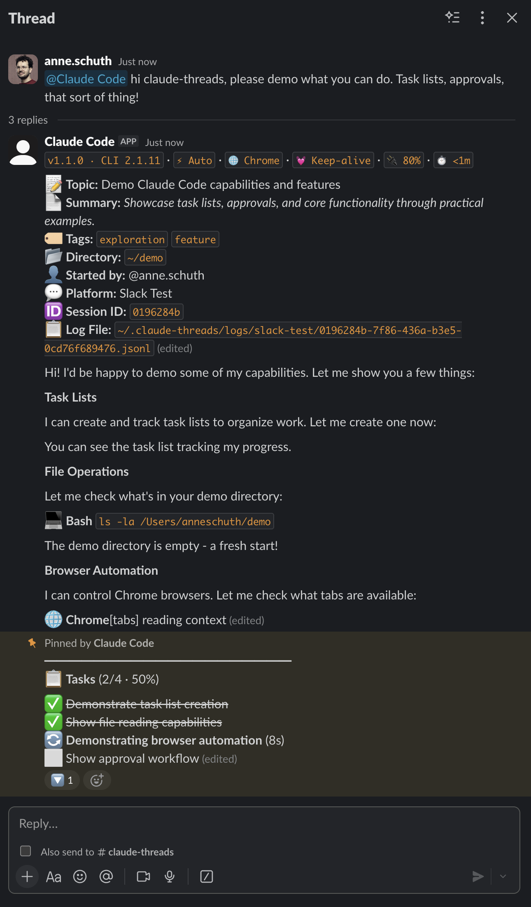
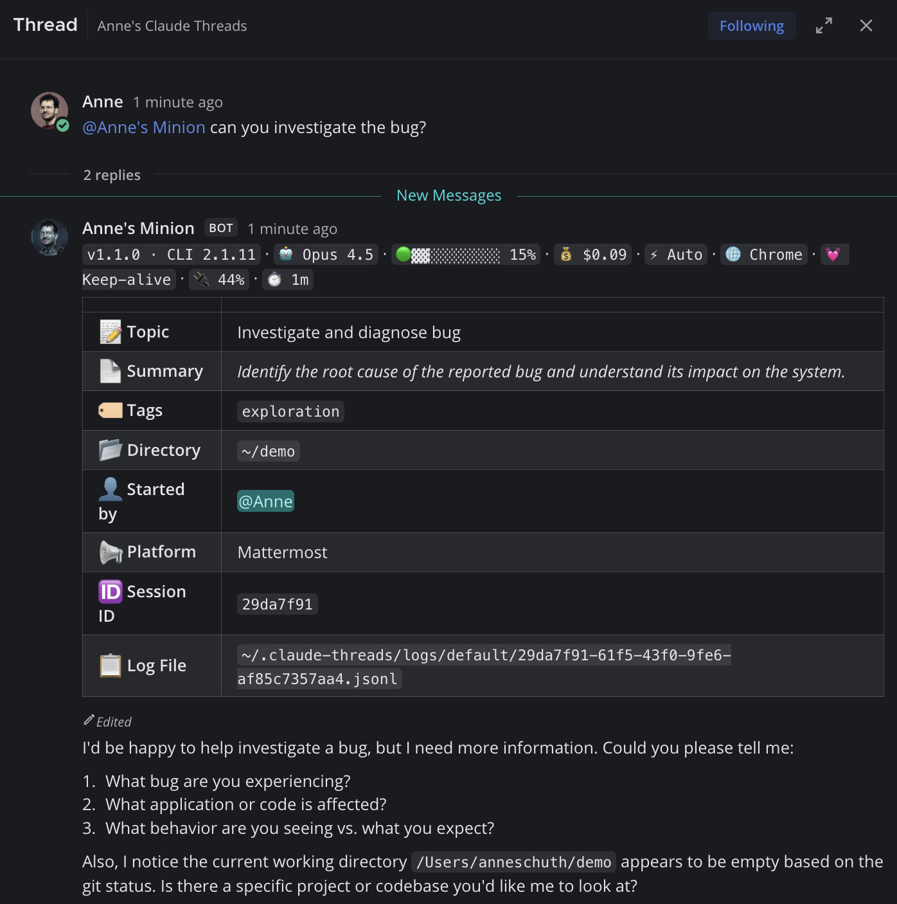

claude-threads
Claude Code × Slack & Mattermost
Run Claude Code on your machine. Your team follows along in Slack or Mattermost threads and types right back. Permission prompts land in the thread as emoji reactions, and it all runs on the Claude subscription you already have.
A session, live in a thread

Scroll: the thread scrolls with you. Task lists, diffs, and permission prompts all land as messages.
How it works
-
@claude fix the flaky test in ci.ymlin your channel - The bot spawns a real Claude Code session in a working directory on your machine
- Everything streams into the thread: output, diffs, task lists, permission prompts
- Steer by replying or reacting with emoji. Anyone you invite can do the same
What Claude can do in your chat
Each session runs its own MCP server, so Claude acts in the chat itself. Every tool carries its own guardrail; nothing reaches beyond the channels the bot can already see.
| Tool | What Claude does with it | Guardrail |
|---|---|---|
send_file |
Post a file into the thread | Path validated against the working directory |
read_post |
Resolve a permalink you paste | Bot's channel plus public channels |
list_thread |
Read the current or a linked thread | Same channel scoping |
read_channel_history |
Read recent channel messages | Capped at 100 messages |
search_messages |
Search messages | Mattermost only, capped at 25 results |
react_to_post |
Add an emoji reaction | Defaults to the message that triggered it |
update_own_post |
Edit one of its earlier posts | Bot-authored posts only |
send_dm |
DM a channel member | 3 per recipient per session, each recipient approves first |
permission_prompt |
Ask the thread to approve a tool use | This one is the approval flow (👍 / ✅ / 👎) |
Features
- Live output, diffs, and a sticky task list streaming into the thread
- Multiple workspaces at once, Slack and Mattermost side by side
- One session per thread, resumed automatically after a bot restart
- Sessions run against your local checkout, with your own MCP servers and plugins
- Optional account pool that routes each new session to the subscription with the most headroom
- Three permission modes, switchable mid-session
-
!invitecollaborators; commits carryCo-Authored-By:for everyone involved - Attach files up to 100 MB; images and PDFs are read multimodally
- Claude posts screenshots, plots, or generated files back into the thread
- Git worktrees isolate each session's changes on a branch
- Quiet mode and per-channel verbosity dials
- Runs on macOS, Linux, and Windows
At home on self-hosted chat
Half of claude-threads lives on Mattermost, where teams run their own chat because the work cannot leave the building. The bot, the session, and the repository all stay on hardware you control.

Commands
| Command | Description |
|---|---|
!help |
Show available commands |
!context |
Show context usage |
!cost |
Show token usage and cost |
!compact |
Compress context |
!cd <path> |
Change working directory |
!permissions <mode> |
Switch between default, auto,
bypass
|
!mentions [on|off] |
Quiet mode: respond only when @mentioned |
!worktree <branch> |
Create a git worktree (also: list,
switch, remove,
cleanup, off)
|
!plugin <cmd> |
Manage Claude Code plugins |
!invite @user |
Invite a user (added as Co-Authored-By: on
commits)
|
!kick @user |
Remove an invited user |
!github-email <email> |
Register your GitHub noreply address for commit attribution |
!update |
Auto-update status (!update now /
!update defer)
|
!release-notes |
What changed in the running version |
!bug <desc> |
Report a bug (creates a GitHub issue) |
!approve |
Approve a pending plan (or react 👍) |
!escape |
Interrupt the current task |
!stop |
Stop the session |
!kill |
Emergency stop for all sessions |
Controls
Permissions
When Claude wants to run a tool:
Plans
When Claude presents a plan:
Questions
Multiple choice:
Session
Pause, stop, or pick a session back up:
Housekeeping
On long output and error posts:
Permission modes
Pick per session with
!permissions default|auto|bypass, set a default in
config, or pass --permission-mode on the command
line.
| Mode | Behavior |
|---|---|
default 🔐 |
Every tool use prompts the thread for 👍 / ✅ / 👎 |
auto ⚡ |
Claude's classifier approves low-risk actions; high-risk still prompts. Recommended. |
bypass ⚠️ |
No prompts, all tools allowed. Trusted environments only. |
Why I built this
I wanted my team to use Claude Code without everyone needing their own setup. Screen sharing works but only one person can type. With claude-threads, colleagues watch Claude work in a thread and can jump in to help, approve actions, or ask questions. All from chat.
After the first minimal version, I built claude-threads using claude-threads. Colleagues watched, asked questions, and caught bugs in real time. It turns out that multiple people guiding the same AI session actually works.
There is now an official way to put Claude in Slack, built by Anthropic and gated to Enterprise plans. claude-threads remains the local one: your machine, your chat server, any subscription.
Quickstart
Requires Bun 1.2.21+ or Node 20+ and the Claude Code CLI
The setup wizard walks you through connecting Slack or Mattermost.